Las 8 unidades desarrolladas tema por tema, siguiendo el temario oficial completo que pasó la cátedra. Escrito para desarrollar por escrito, no para elegir opciones.
Evaluación escrita, con temas para desarrollar de dos unidades. Una te toca al azar; si cumpliste la cursada (guía de TP + foros), podés elegir vos la segunda. Esta guía cubre el temario oficial completo. Los temas marcados con 10/15 pts son los que aparecieron en un examen modelo (te sirven de referencia de peso); los marcados temario están en la lista oficial y también pueden caer. Criterios de la cátedra: claridad conceptual, fundamentación teórica, vocabulario técnico. Traducción: nombrá al autor, definí con precisión y ejemplificá.
Cada tema está redactado a profundidad de examen (definición + explicación + ejemplo + autor). Priorizá los temas de 15 pts del modelo, pero tené leídos todos los del temario: en el final puede caer cualquiera de la unidad que te toque.
Es la unidad más "de definiciones": buena candidata a elegir. No confundas necesidad / deseo / demanda (trampa clásica) y dejá clarísimo que el marketing no crea necesidades. Citá a Levitt en miopía y a Lambin en la evolución. Distinguí bien macro vs microentorno (fuerzas amplias vs actores cercanos) y mercado de consumo vs industrial.
El marketing es un proceso social y de gestión por el cual individuos y grupos obtienen lo que necesitan y desean creando, ofreciendo e intercambiando productos y servicios de valor con otros (Kotler). Su concepto central es el intercambio: dos partes que se dan algo de valor de manera voluntaria y con beneficio mutuo.
Como orientación de gestión, el marketing supone que toda la empresa se enfoca en detectar y satisfacer las necesidades del cliente mejor que la competencia, y a partir de eso alcanza sus propios objetivos de rentabilidad.
Concepto de Theodore Levitt (Marketing Myopia, 1960). Es el error de definir el negocio en términos del producto que se fabrica y no de la necesidad que se satisface. La empresa miope se enamora de su producto, pierde de vista para qué lo compra el cliente y no ve venir a los sustitutos, hasta quedar obsoleta.
El ejemplo canónico son los ferrocarriles: creyeron estar en el "negocio de los trenes" y no en el "del transporte", y no reaccionaron ante el auto y el avión. Se sintetiza en: "la gente no quiere un taladro, quiere un agujero". La cura: definir el negocio desde la necesidad del cliente (orientación al mercado).
Según Kotler, el marketing evolucionó a través de las distintas orientaciones o filosofías con que las empresas encararon el mercado:
El hilo conductor es el desplazamiento del foco: de la producción y la venta del producto hacia el cliente, el valor y los valores. Kotler también resume este recorrido como la evolución del Marketing 1.0 al 5.0 (del producto → al cliente → a los valores → a lo digital → a la tecnología).
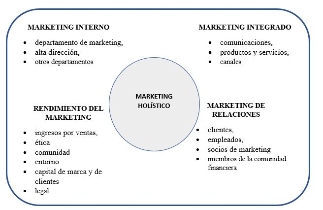
Tres conceptos de Kotler que no hay que mezclar:
Frase clave: el marketing no crea necesidades (preexisten), moldea deseos y busca convertirlos en demanda. Kotler añade los estados de la demanda (negativa, inexistente, latente, decreciente, irregular, plena, excesiva, indeseable) y la tarea del marketing en cada uno.
El entorno de marketing es el conjunto de actores y fuerzas externas a la función de marketing que afectan la capacidad de la empresa para desarrollar y mantener relaciones exitosas con sus clientes meta (Kotler). Son en su mayoría variables no controlables: la empresa no las decide, pero debe monitorearlas y adaptarse. Se divide en microentorno (fuerzas cercanas) y macroentorno (fuerzas amplias).
El microentorno son las fuerzas cercanas a la empresa que afectan su capacidad de servir a los clientes. Sus componentes:
Son actores próximos sobre los que la empresa tiene cierta influencia.
El macroentorno son las fuerzas sociales más amplias que afectan a todo el microentorno; son no controlables. Sus componentes (Kotler):
Diferencia clave a marcar en el final: el micro son actores cercanos con los que se interactúa; el macro son fuerzas generales a las que solo se puede adaptar.
El marketing mix es el conjunto de herramientas controlables que la empresa combina para influir en el mercado meta: las 4P. Producto (qué se ofrece para satisfacer la necesidad), Precio (cuánto cuesta; el único que genera ingresos), Plaza / distribución (cómo y dónde llega al cliente) y Promoción / comunicación (cómo se da a conocer y se persuade). Es el brazo del marketing operativo. (Se desarrolla en detalle en la Unidad 8.)
El mercado de consumo está formado por todos los individuos y hogares que compran o adquieren bienes y servicios para su consumo personal o final. La compra es para uso propio, suele ser más emocional, con muchos compradores de bajo volumen cada uno.
El mercado industrial u organizacional (B2B) está formado por organizaciones que compran bienes y servicios para producir otros bienes, revenderlos o para su operación. Se caracteriza por: demanda derivada (depende de la del consumidor final), menos compradores pero más grandes, compra más racional y profesional, relaciones estrechas y proceso de compra más complejo (centro de compras).
Eje: la doble cara de Lambin (estratégico = análisis; operativo = acción). Ordená el proceso de planeamiento por pasos y nombrá los niveles (corporativo, UEN, funcional). No confundas planeamiento estratégico (amplio, corporativo) con plan de marketing (documento operativo del área). Dibujá Ansoff y las genéricas de Porter.
Es la dimensión de análisis del marketing, de mediano y largo plazo (Lambin). Detecta necesidades insatisfechas, define y segmenta el mercado de referencia, evalúa el atractivo de cada segmento y la competitividad de la empresa, y elige los mercados meta y el posicionamiento. Es la brújula: define qué hacer y hacia dónde ir antes de actuar.
Es la dimensión de acción, de corto plazo (Lambin). Es el brazo comercial que ejecuta las 4P (producto, precio, plaza, promoción) para conquistar la cuota de mercado en los segmentos ya elegidos por el marketing estratégico. Es el cómo. Sin estrategia, el operativo vende bien lo que no debía; sin operativo, la mejor estrategia no se concreta en ventas.
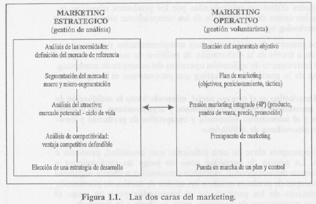
Concepto: proceso de crear y mantener un ajuste (calce) entre los objetivos y capacidades de la organización y sus oportunidades cambiantes de mercado (Kotler). Define en qué negocios está la empresa y adónde va.
Proceso (pasos): 1) definir la misión (orientada al mercado); 2) fijar objetivos y metas; 3) análisis de situación / FODA; 4) formulación de la estrategia (mercados meta, crecimiento, competitiva); 5) implementación (marketing mix); 6) control y retroalimentación.
La misión es la razón de ser de la empresa: a qué se dedica y a quién sirve, definida —recordando a Levitt— orientada a la necesidad del cliente y no al producto. La visión es la imagen del futuro deseado: adónde quiere llegar la organización en el largo plazo, lo que aspira a ser. La misión mira el presente (qué somos y hacemos); la visión, el futuro (qué queremos ser).
La planeación ocurre en tres niveles:
Una UEN es una unidad de la empresa que puede planificarse de forma independiente del resto: tiene su propia misión y objetivos, sus propios competidores y un responsable a cargo. Puede ser una división, una línea de productos o una sola marca. Permite gestionar por separado negocios con lógicas distintas (ej.: una empresa con UEN de electrodomésticos y otra de servicios financieros).
La matriz producto–mercado de Ansoff muestra cuatro estrategias de crecimiento intensivo cruzando productos (actuales/nuevos) y mercados (actuales/nuevos):
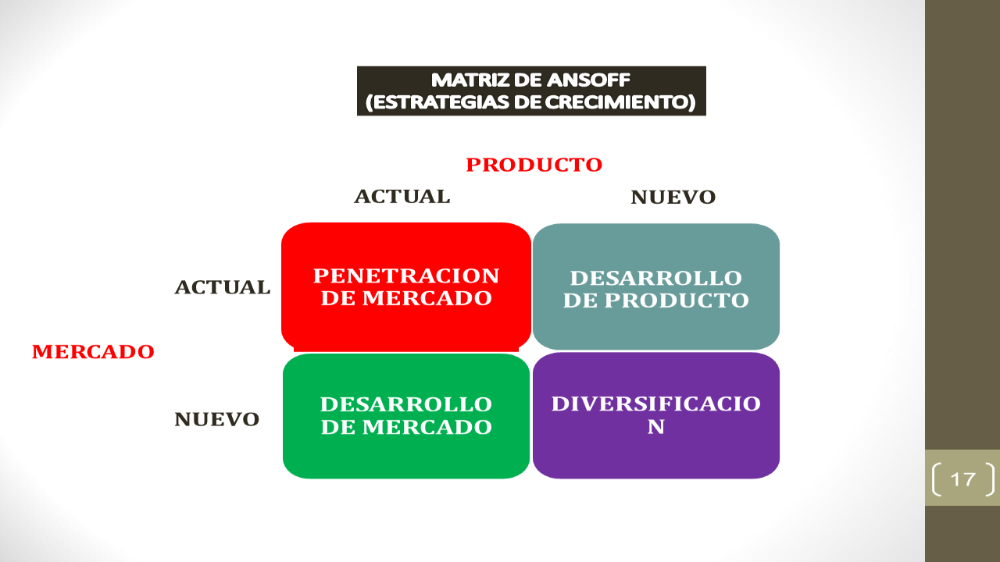
Porter plantea tres estrategias genéricas para lograr una ventaja competitiva sostenible:
Advierte contra quedar "atrapado en el medio" (ni el más barato ni el más diferenciado).
El FODA (SWOT) es la herramienta de diagnóstico de la situación. Cruza el análisis interno —Fortalezas y Debilidades (controlables, de la empresa)— con el análisis externo —Oportunidades y Amenazas (del entorno, no controlables)—. De cruzarlos surgen las estrategias: FO (usar fortalezas para aprovechar oportunidades), FA (fortalezas para enfrentar amenazas), DO (superar debilidades aprovechando oportunidades) y DA (defensivas).
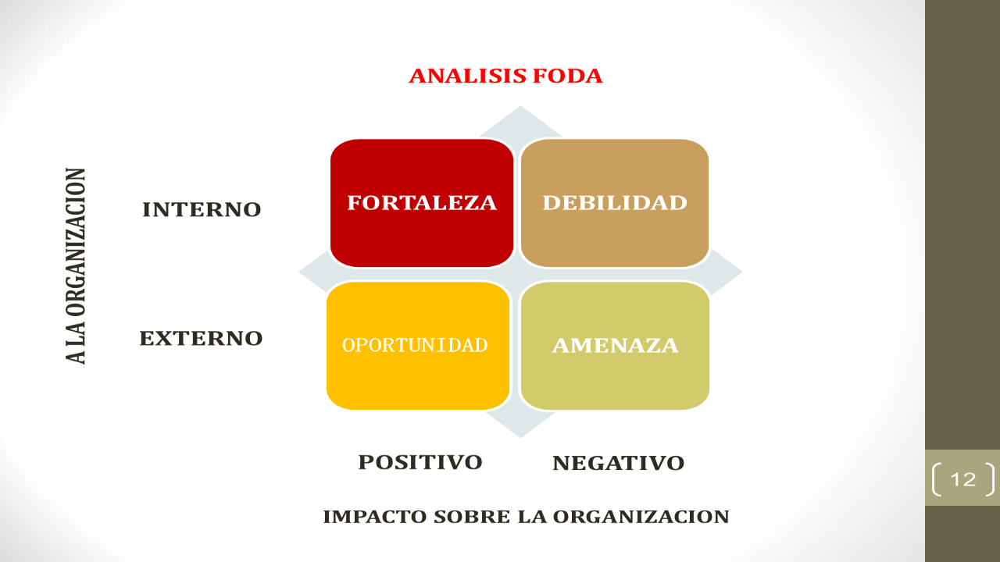
El plan de marketing es el documento que detalla la estrategia y las acciones de marketing para un producto o unidad en un período. Es más acotado y operativo que el planeamiento estratégico (que es corporativo y de largo plazo). Sus etapas / partes (Kotler):
El temario pide las cuatro etapas del ciclo (características + estrategias), no solo madurez y declive: tenelas todas. Separá bien características (qué pasa con ventas/utilidades/competencia) de estrategias (qué hace la empresa). Y sabé los parámetros de la demanda (potencial → disponible → meta → penetrado). Dibujá la curva.
Son los distintos "tamaños" del mercado, de más amplio a más acotado (Kotler):
La empresa usa estos parámetros para estimar demanda y fijar objetivos de participación.
El ciclo de vida del producto (Kotler) describe la evolución de las ventas y las utilidades de un producto a lo largo del tiempo, en cuatro etapas: introducción, crecimiento, madurez y declive. Cada etapa presenta oportunidades y problemas distintos y exige una estrategia de marketing propia. Supone que todo producto tiene vida limitada.
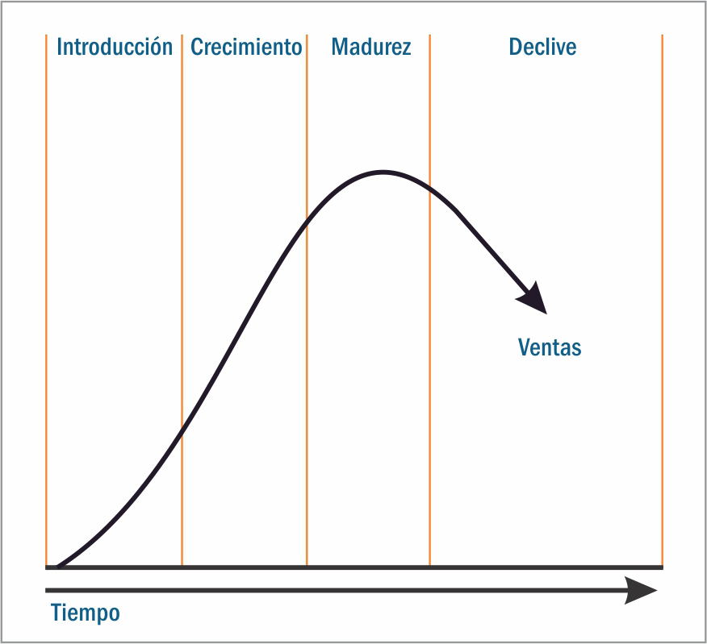
Distinguí el SIM (el paraguas y sus componentes) de la investigación de mercado (estudio puntual, ad hoc) y sabé el proceso de investigación en 5 pasos. El focus group es una técnica cualitativa de recolección de datos primarios. Unidad ordenada y conceptual: buena para elegir.
El SIM (Kotler) es el conjunto de personas, equipos y procedimientos destinados a reunir, clasificar, analizar, evaluar y distribuir información necesaria, oportuna y precisa a quienes toman las decisiones de marketing. Es el "sistema nervioso" que transforma datos en información útil para decidir.
El SIM se integra de cuatro subsistemas:
Es el diseño, obtención, análisis y presentación sistemática de datos pertinentes a una situación de marketing específica (Kotler). Es un estudio ad hoc, para resolver una decisión concreta. Usa fuentes secundarias (datos que ya existen) y primarias (nuevas: encuestas, observación, experimentos, focus group).
El focus group (grupo de enfoque) es una técnica cualitativa de recolección de datos primarios: una reunión de 6 a 10 personas seleccionadas, guiadas por un moderador, que discuten en profundidad un producto, marca o concepto durante unas horas. Sirve para explorar percepciones, motivaciones y actitudes (el "por qué"), no para medir con precisión estadística. Es habitual en la etapa exploratoria de una investigación.
Es la unidad más extensa del temario. No la reduzcas a "factores culturales": son cuatro grupos de factores (culturales, sociales, personales y psicológicos). Y distinguí siempre el mercado de consumo del organizacional (proceso de decisión y participantes distintos). Maslow y las etapas de decisión conviene apoyarlos en gráfico + ejemplo.
Es el estudio de cómo los individuos, grupos y organizaciones seleccionan, compran, usan y desechan bienes, servicios, ideas o experiencias para satisfacer sus necesidades y deseos (Kotler). Busca entender qué, por qué, cómo, cuándo, dónde y cuánto compran, para diseñar mejor la oferta.
Kotler agrupa las influencias en cuatro conjuntos:
Cuatro procesos psicológicos clave median entre el estímulo de marketing y la respuesta del consumidor:
Maslow ordena las necesidades en una jerarquía, de las más urgentes a las menos: fisiológicas (hambre, sed) → seguridad (protección) → sociales / pertenencia (afecto, grupo) → estima (reconocimiento, estatus) → autorrealización (desarrollo del propio potencial).
La persona satisface primero las más básicas; una vez satisfecha, esa necesidad deja de motivar y aparece la del nivel siguiente. Para el marketing es clave: permite ubicar qué necesidad satisface un producto y comunicar en consecuencia (un seguro apela a la seguridad; una marca de lujo, a la estima).
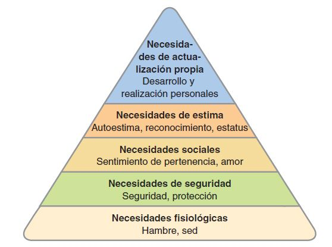
En una decisión de compra de consumo pueden intervenir distintas personas, con roles diferentes (Kotler): iniciador (propone la idea), influyente (incide con su opinión), decisor (resuelve qué/cómo/dónde comprar), comprador (concreta la compra) y usuario (consume el producto). Identificarlos permite dirigir el marketing a quien corresponde.
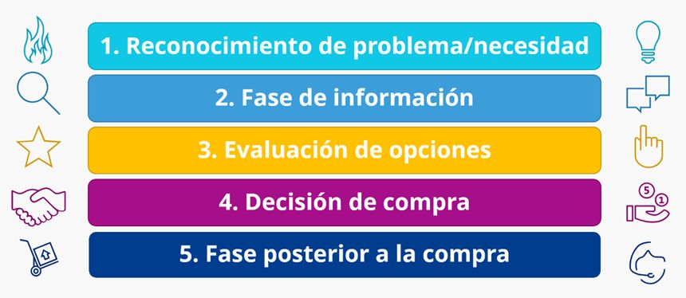
La compra organizacional o corporativa es el proceso de toma de decisiones por el cual las organizaciones establecen la necesidad de comprar productos y servicios, e identifican, evalúan y eligen entre las marcas y proveedores disponibles. Es más racional, técnica y formal que la compra de consumo, con demanda derivada y varios participantes (centro de compras).
Kotler describe hasta ocho fases (buygrid) en una compra nueva:
En recompras directas o modificadas, algunas fases se acortan u omiten.
El centro de compras (buying center) es el conjunto de personas que participan en la decisión de compra organizacional, con estos roles (Kotler): iniciadores, usuarios, influyentes (técnicos que definen especificaciones), decisores, aprobadores, compradores (gestionan la operación) y guardianes/gatekeepers (controlan el flujo de información hacia el centro). El marketing B2B debe identificar a cada uno y sus criterios.
El par ventaja competitiva interna vs externa es el corazón: interna = costos/productividad (mirar adentro), externa = valor percibido/diferenciación (mirar el mercado). Son las dos ventajas de Lambin, ligadas a productividad y poder de mercado. Las 5 fuerzas de Porter: dibujá el diagrama.
La ventaja competitiva es el conjunto de características o atributos de un producto o marca que le dan una superioridad sobre sus competidores directos (Lambin). Esa superioridad es la base de la competitividad: la capacidad de la empresa de mantener o aumentar su participación de mercado de forma rentable. Puede ser interna (costos) o externa (valor percibido).
Se basa en la superioridad de la empresa en el dominio de los costos de fabricación, administración y gestión. Surge de mirar hacia adentro: productividad, eficiencia de procesos, tecnología, curva de experiencia y economías de escala. Da un costo unitario menor que el de los rivales y, por lo tanto, un margen de maniobra en el precio. Es la base del liderazgo en costos de Porter. Se traduce en productividad.
Se apoya en cualidades distintivas del producto que constituyen un valor para el comprador (mayor calidad, mejor desempeño, atributos percibidos como superiores). Surge de mirar hacia el mercado. Da a la empresa un poder de mercado: el cliente acepta pagar un precio superior porque percibe más valor. Es la base de la diferenciación de Porter. Síntesis: la interna defiende el costo; la externa, el precio y el valor percibido.
Son las dos consecuencias de las ventajas competitivas (Lambin). La ventaja externa otorga poder de mercado: la empresa puede hacer aceptar un precio superior al de sus competidores gracias al valor percibido. La ventaja interna otorga productividad: la empresa tiene mejores costos y por eso resiste mejor la competencia de precios. Una empresa fuerte busca sostener ambas.
Porter propone el modelo de rivalidad ampliada: el atractivo y la rentabilidad de un sector dependen de cinco fuerzas:
Cuanto más intensas las fuerzas, menos atractivo (menos rentable) el sector.
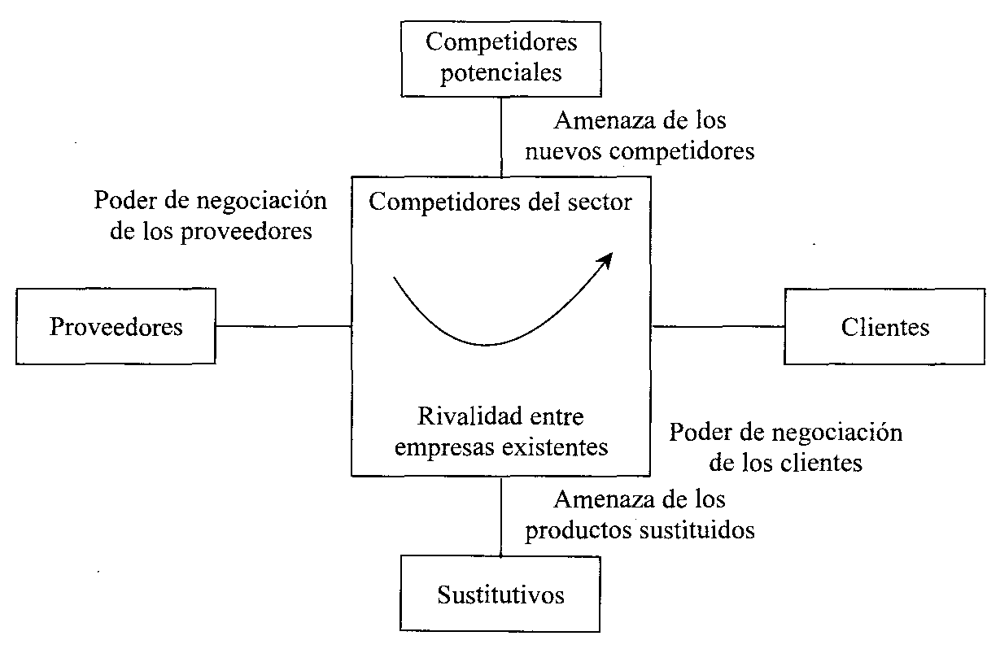
Ordená la cadena: mercado → segmento → nicho (de más amplio a más chico). No confundas niveles de segmentación (grado) con bases (variables) ni con estrategias de cobertura (indiferenciada/diferenciada/concentrada). Posicionamiento = un lugar en la mente (Ries & Trout).
Un mercado es el conjunto de compradores reales y potenciales de un producto o servicio, que comparten una necesidad o deseo y que podrían satisfacerlo mediante el intercambio.
Un segmento de mercado es un grupo de consumidores que comparten necesidades o características similares y que responden de manera parecida a un conjunto de estímulos de marketing. Es una porción homogénea dentro de un mercado heterogéneo.
Un nicho es un grupo más estrecho y específico que un segmento: un subgrupo con necesidades particulares poco atendidas, dispuesto a pagar por una oferta a medida. Suele tener poca competencia. (Ej.: dentro del segmento de zapatillas deportivas, el nicho de calzado para running de montaña.)
Son los grados de fragmentación con que se aborda el mercado (Kotler): marketing masivo (sin distinción) → de segmentos → de nichos → local → individual (uno a uno). A menor nivel, mayor precisión y adaptación, pero también mayores costos.
Definen a cuántos segmentos apunta la empresa (Kotler):
Son las variables con que se divide el mercado de consumo:
Un buen segmento debe ser medible, sustancial, accesible, diferenciable y accionable.
Es la acción de diseñar la oferta y la imagen de la empresa para que ocupen un lugar distintivo en la mente del mercado meta (Kotler; Ries y Trout). No es lo que se le hace al producto, sino lo que se genera en la mente del consumidor, en relación con los competidores. Su resultado es una propuesta de valor clara.
Formas de posicionar una marca: por atributo o beneficio, por relación calidad/precio, por uso o aplicación, por tipo de usuario, frente al competidor o por categoría. Errores a evitar: subposicionamiento (no dice nada distintivo), sobreposicionamiento (imagen demasiado estrecha), posicionamiento confuso y dudoso (poco creíble).
Es la unidad más larga: recorre las 4P completas. En producto, sabé los niveles/dimensiones y la clasificación. En precio, la coherencia interna (costos) vs externa (valor/competencia). En distribución, separá amplitud vertical (niveles del canal) de horizontal (intensidad de cobertura). En comunicación, definí y diferenciá las 5 herramientas de la mezcla. Cerrá con las 4C (las 4P desde el cliente).
Un producto es todo aquello que se ofrece a un mercado para su atención, adquisición, uso o consumo, y que puede satisfacer una necesidad o deseo (Kotler). Incluye no solo bienes físicos, sino también servicios, experiencias, personas, lugares, ideas y organizaciones.
Kotler describe cinco niveles, cada uno agrega valor:
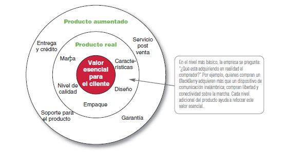
Los servicios se distinguen por cuatro características (las "4 I"):
El precio es la cantidad de dinero que se cobra por un producto o servicio; en sentido amplio, la suma de valores que el consumidor entrega a cambio del beneficio. Es el único elemento del mix que genera ingresos (los demás son costos) y el más flexible (se cambia rápido). Expresa el valor percibido.
El precio debe guardar dos coherencias: la interna es la coherencia con los costos y con los objetivos y el resto de la línea de productos de la empresa (que sea rentable y no canibalice). La externa es la coherencia con el mercado: con la percepción de valor del cliente y con los precios de la competencia. Un precio sano equilibra ambas: cubre costos (interna) y es aceptado por el mercado (externa).
El consumidor no procesa los precios de forma puramente racional. Intervienen: los precios de referencia (compara con un precio que tiene en mente), la inferencia precio–calidad (asume que "más caro = mejor"), y los precios psicológicos (terminados en 9, como $999, que se perciben más bajos). Por eso la fijación de precios considera la percepción, no solo el costo.
La distribución (plaza) es el conjunto de actividades que hacen que el producto esté disponible para el consumidor en el lugar y momento adecuados. Un canal de distribución es el conjunto de organizaciones interdependientes (intermediarios) que participan en el proceso de poner el producto a disposición del consumidor final.
Síntesis: la vertical es "qué tan largo" es el canal; la horizontal, "qué tan ancho".
Como los servicios son intangibles e inseparables (se producen y consumen a la vez), sus canales suelen ser más cortos y directos (del proveedor al cliente, sin stock ni reventa física). El foco pasa a la ubicación, el acceso y la disponibilidad (sucursales, plataformas digitales, franquicias, agentes). Ej.: un banco distribuye vía sucursales, cajeros y app.
La comunicación de marketing es el conjunto de herramientas con que la empresa informa, persuade y recuerda —directa o indirectamente— sobre sus productos y marcas. Sus objetivos, según la etapa: informar (dar a conocer, productos nuevos), persuadir (generar preferencia y compra, etapa competitiva) y recordar (mantener presente la marca, productos maduros). La mezcla de comunicación combina cinco herramientas.
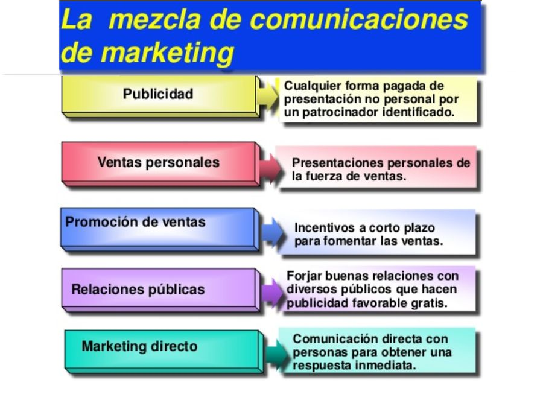
Toda forma pagada y no personal de presentación y promoción de ideas, bienes o servicios por un patrocinador identificado (Kotler). Es masiva y unidireccional, usa medios (TV, radio, vía pública, digital). Sirve para informar, persuadir o recordar.
Conjunto de incentivos de corto plazo para fomentar la prueba o la compra rápida (cupones, descuentos, muestras, 2x1, concursos, sorteos). Busca respuesta inmediata; complementa a la publicidad, no la reemplaza.
Es la presentación personal que hace la fuerza de ventas de la empresa con el fin de vender y construir relaciones con los clientes. Es interactiva y bidireccional (permite adaptar el mensaje y responder objeciones), la más efectiva en las etapas finales de la compra, pero también la más costosa por contacto. Clave en mercados industriales.
Actividades para construir buenas relaciones con los distintos públicos de la empresa, obteniendo publicidad favorable, creando una buena imagen corporativa y manejando rumores o hechos desfavorables. Incluye prensa, eventos, patrocinios, RSE. Es muy creíble (el mensaje no aparece como pago) y de bajo costo relativo.
Conexión directa con consumidores individuales cuidadosamente seleccionados, para obtener una respuesta inmediata y cultivar relaciones duraderas. Usa correo, e-mail, teléfono (telemarketing), catálogos y canales online. Es personalizado, interactivo y medible.
Las 4C (Robert Lauterborn) son una reinterpretación de las 4P desde la perspectiva del cliente. A cada P le corresponde una C:
El aporte de las 4C es el giro de foco: de la empresa y el producto hacia el cliente y su experiencia.
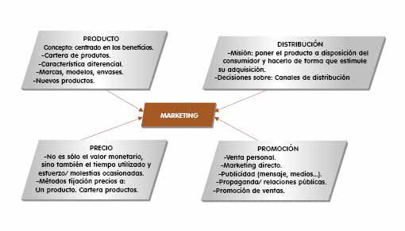